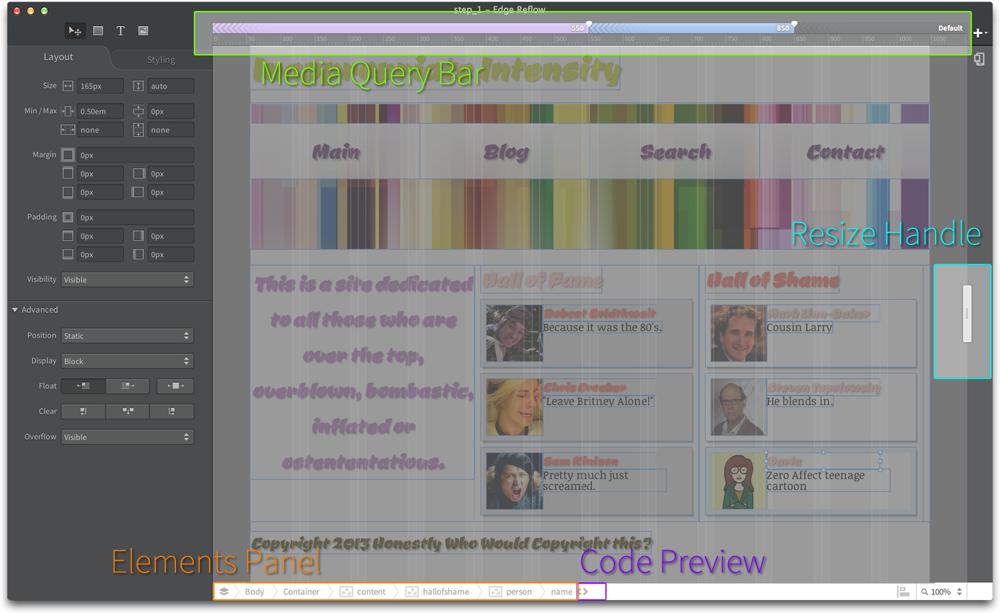
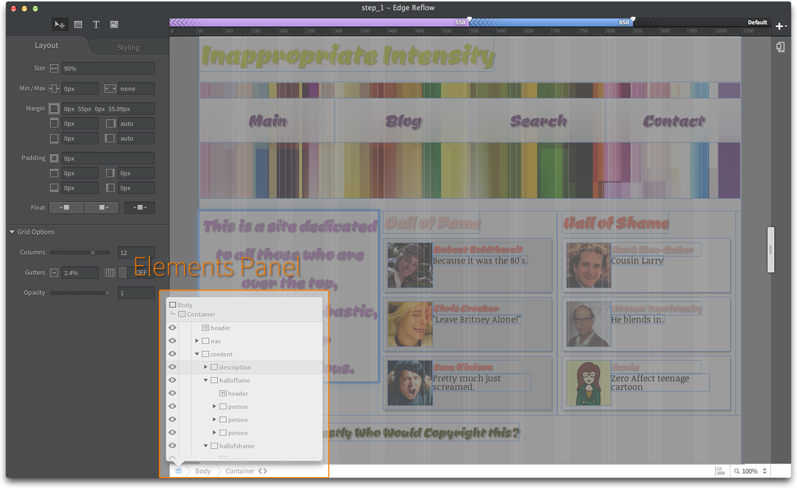
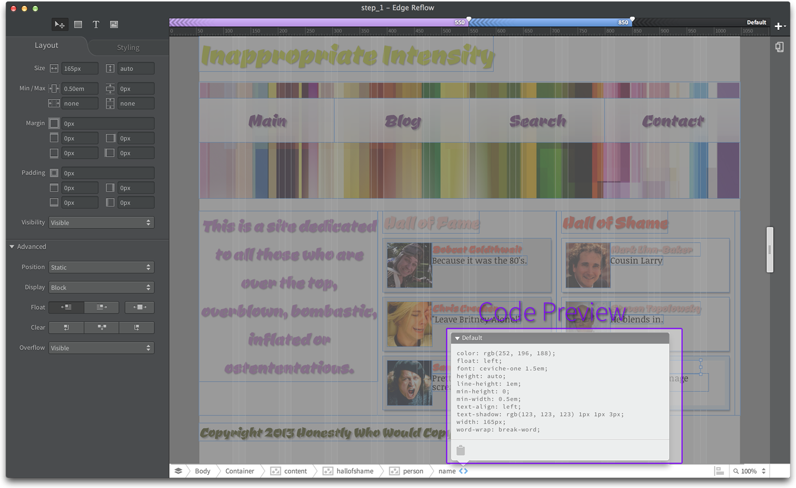

Reflow
Reflow has your standard controls for editing boxes and text, but there are 4 unique portions that I'd like to document:
- Media Query Bar
- This section allows you to see and edit all your breakpoints for media queries.
- Resize Handle
- This handle allows you to resize the design area for either previewing at sizes or for use with the Media Query Bar in setting breakpoints.
- Elements Panel
- Gives you a look at the structure you are creating, allowing you to see the hierarchical relationships you are creating in your design.
- Code Preview
- Allows you to see the CSS code that enables each element of your design.

Reflow UI

Elements Panel Expanded

Code Preview Expanded